Das Privatkonto: Entnahmen, Einlagen und Eigenkapital – Arbeitsheft mit Lösungen (BwR 9, Realschule)
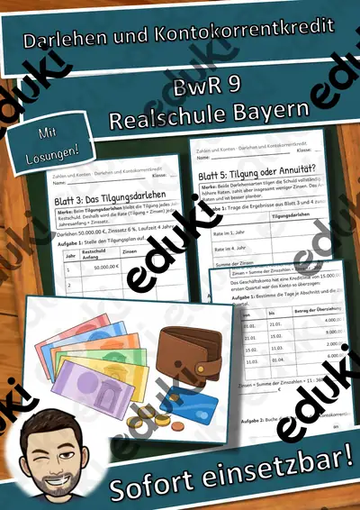
Darlehen und Kontokorrentkredit – Arbeitsheft mit Lösungen (BwR 9, Realschule Bayern)

Epochengliederung Lückentext mit Wortspeicher Hörverstehen und Suchsel

Epiphanias Lückentext mit Wortspeicher Hörverstehen und Suchsel

Finanzierung – Arbeitsheft mit Lösungen (BwR 9, Realschule Bayern)

Anlagen buchen: Kauf und Abschreibung – Arbeitsheft mit Lösungen (BwR 9, Realschule Bayern)

Elektronenmikroskop Lückentext mit Wortspeicher Hörverstehen und Suchsel
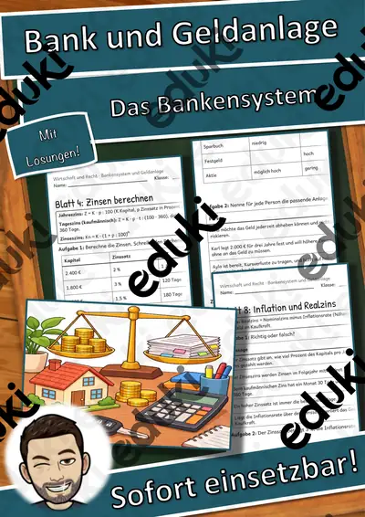
Bank und Geldanlage: das Bankensystem – Arbeitsheft mit Lösungen (WR 8/9, Realschule Bayern)

Bewerbung: der Berufsausbildungsvertrag – Arbeitsheft mit Lösungen (WR 8/9, Realschule Bayern)

Markt und Preis: Preisbildung und Marktformen – Arbeitsheft mit Lösungen (WR 8/9, Realschule Bayern)

Einzigartigkeit der Erde Lückentext mit Wortspeicher Hörverstehen und Suchsel

Die Farbe Rot Lückentext mit Wortspeicher Hörverstehen und Suchsel

Geschäftsfähigkeit: der Taschengeldparagraph – Arbeitsheft mit Lösungen (WR 8/9, Realschule Bayern)
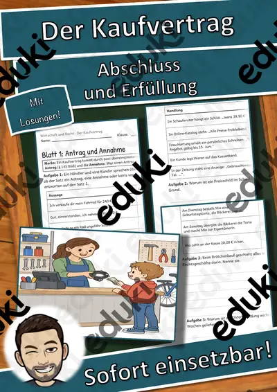
Der Kaufvertrag: Abschluss und Erfüllung – Arbeitsheft mit Lösungen (WR 8/9, Realschule Bayern)
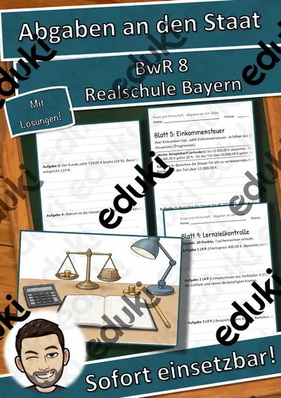
Abgaben an den Staat – Arbeitsheft mit Lösungen (BwR 8, Realschule Bayern)

Die Farbe Blau Lückentext mit Wortspeicher Hörverstehen und Suchsel

Computermusik Lückentext mit Wortspeicher Hörverstehen und Suchsel

Personal: Beschaffung, Lohn und Gehalt – Arbeitsheft mit Lösungen (BwR 8, Realschule Bayern)
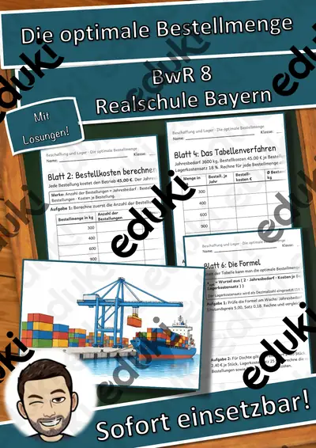
Die optimale Bestellmenge – Arbeitsheft mit Lösungen (BwR 8, Realschule Bayern)
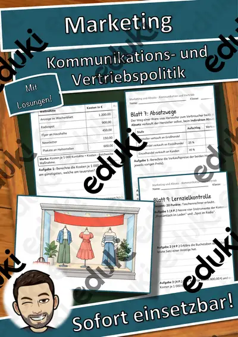
Marketing: Kommunikations- und Vertriebspolitik – Arbeitsheft mit Lösungen (BwR 8, Realschule)

Computeranlage Lückentext mit Wortspeicher Hörverstehen und Suchsel

Buße und Umkehr Lückentext mit Wortspeicher Hörverstehen und Suchsel

Produkt- und Preispolitik – Arbeitsheft mit Lösungen (BwR 8, Realschule Bayern)
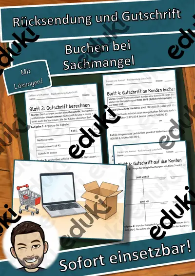
Rücksendung und Gutschrift: Buchen bei Sachmangel – Arbeitsheft mit Lösungen (BwR 8, Realschule)

Skonto buchen: Lieferanten und Kunden – Arbeitsheft mit Lösungen (BwR 8, Realschule Bayern)
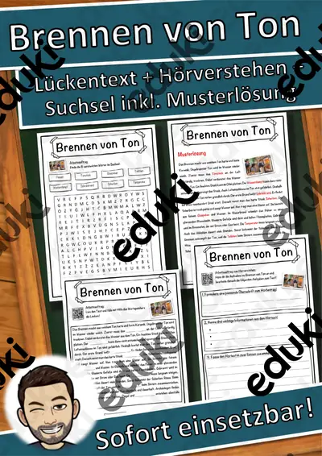
Brennen von Ton Lückentext mit Wortspeicher Hörverstehen und Suchsel
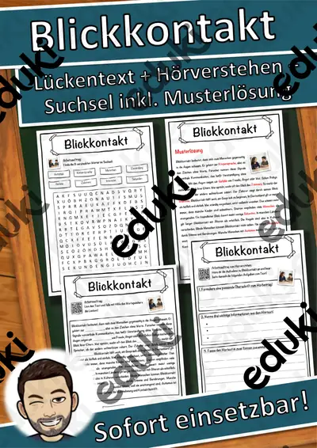
Blickkontakt Lückentext mit Wortspeicher Hörverstehen und Suchsel

Bären – Hörverstehen mit Lückentext (interaktiv)
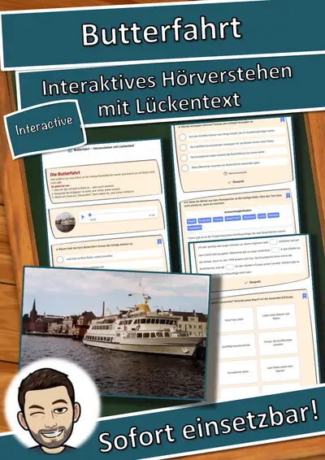
Butterfahrt – Hörverstehen mit Lückentext (interaktiv)

Verkäufe buchen: Umsatzsteuer und Zahllast – Arbeitsheft mit Lösungen (BwR 8, Realschule Bayern)

Burgund – Hörverstehen mit Lückentext (interaktiv)
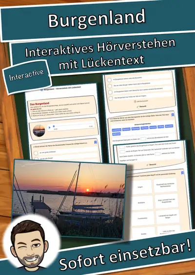
Burgenland – Hörverstehen mit Lückentext (interaktiv)

Bundestagswahl 2025 – Hörverstehen mit Lückentext (interaktiv)
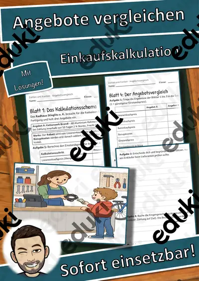
Angebote vergleichen: Einkaufskalkulation – Arbeitsheft mit Lösungen (BwR 8, Realschule Bayern)

Rohstoffe einkaufen: Bezugskosten und Rabatt – Arbeitsheft mit Lösungen (BwR 8, Realschule Bayern)

Bumerang – Hörverstehen mit Lückentext (interaktiv)

Buddha – Hörverstehen mit Lückentext (interaktiv)

Buckingham Palace – Hörverstehen mit Lückentext (interaktiv)
Bewerbungsanschreiben Lückentext mit Wortspeicher Hörverstehen und Suchsel

Buckelwal – Hörverstehen mit Lückentext (interaktiv)

Buchen – Hörverstehen mit Lückentext (interaktiv)
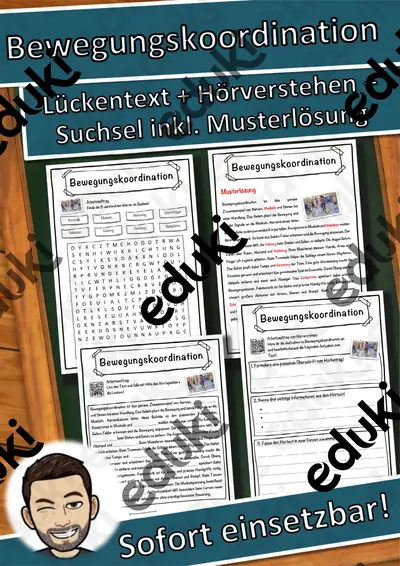
Bewegungskoordination Lückentext mit Wortspeicher Hörverstehen und Suchsel

Brüssel – Hörverstehen mit Lückentext (interaktiv)

Zypern – Hörverstehen mit Lückentext (interaktiv)

Bretagne – Hörverstehen mit Lückentext (interaktiv)

Brügge – Hörverstehen mit Lückentext (interaktiv)

Bronzezeit – Hörverstehen mit Lückentext (interaktiv)

Braunbär – Hörverstehen mit Lückentext (interaktiv)
Keine Materialien gefunden – versuch einen anderen Suchbegriff oder Filter.